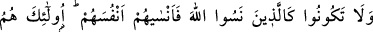

nasıl olur?” dedi ve hıçkırıklarla ağladı. “Seni ağlatan nedir?” dedim. “Vallahi dünyaya
olan ihtirasımdan veya ölüm korkusundan ve belâdan dolayı ağlamıyorum. Ömrümden
geçip giden ve içinde iyi amelimin bulunmadığı günlerime ağlıyorum. Yemin ederim ki,
azık azlığı, gidilecek yerin uzaklığı, yokuşun çok dik oluşu ve henüz yolculuğumun
cennete mi, cehenneme mi olacağını bilmeyişim beni ağlatıyor” dedi. “İnsanlar senin
deli olduğunu iddiâ ediyor” dedim. “Sen de dünya çocuklarının aldandığına aldandın
mı? İnsanlar beni mecnun zannediyorlar, ama benim deliliğim yok. Ancak Mevlamı
sevmek, benim kalbime ve kanıma karıştı ve kanımla etimin içinde akıyor. Ben O’nun
aşkından şaşkın ve yüreği yanık kimseyim” dedi. “Ey Sa’dûn! Niçin insanlarla
oturmuyor ve onlara karışmıyorsun?” dedim. O şu şiiri söyledi:
İnsanlardan uzak dur
Allah’a dost ol!
İnsanlarla nasıl geçinirsen geçin
Onları akrepler olarak bulursun.
et-Te’vilâtü’n- necmiyye’de şöyle denilmiştir: Ey şuhûdî, vücûdî ve gerçek îman ile
îman edenler! Nefislerinizi, kemalât ile koruyunuz ve Allah’ın zat ve sıfatlarının ârif ve
kâmil olan her nefis, şühûd günü olan yarını için ne hazırladığına baksın. O’ndan
başkasına yönelmekten korkunuz. Çünkü Allah, yaptıklarınızdan hakkıyla haberdardır.
Allah’a yönelip, dünyaya arkanızı çevirmenizi veya Allah’a sırt çevirip dünyaya
yöneldiğinizi, hakkiyle bilir.
Âyet-i kerimedeki nefsün kelimesinin kapsamına cinlerin nefisleri de girer. Çünkü
onlar da mükellef olanlardan sayılmıştır. Bu sebeple bir çok yerlerde târif edildiği gibi
insanlar için gerekli olan takvâ ve amel, onlar için de gereklidir.
19. Allah’ı unutan ve bu yüzden Allah’ın da onlara kendilerini unutturduğu
kimseler gibi olmayın. Onlar yoldan çıkan kimselerdir.
“Allah’ı unutan ve bu yüzden Allah’ın da onlara kendilerini unutturduğu kimseler
gibi olmayın.” Yâni ey mü’minler! Yahûdi ve münâfıklardan, ölü veya diri kâfirlerden
kim olursa olsun, onlar gibi olmayın.
Ellezine ism-i mevsûlü yerin ve makamın gereği olarak ahd için veya cins için olup
ölü veya diri inkârcıların tamamı kasdedilmiştir.
Nesullahe (Allah’ı unuttular) cümlesinde muzaf hazf edilmiştir. Yâni Allah’ın
haklarını unuttular, O’nu gereği gibi takdir etmediler, O’nun emir ve yasaklarına